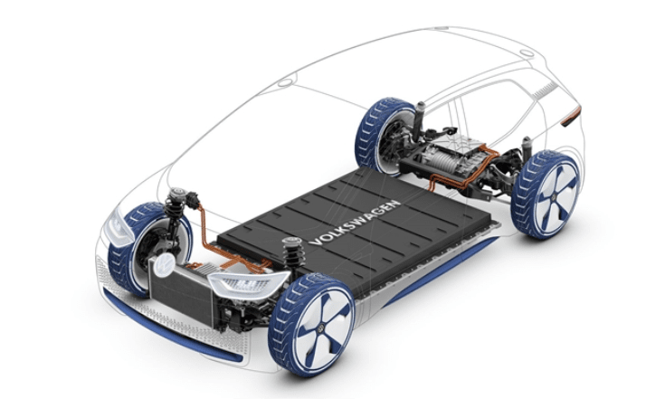
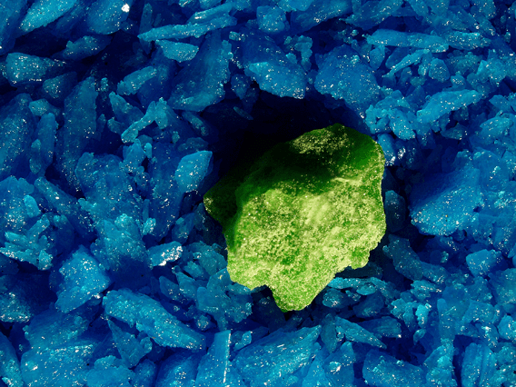
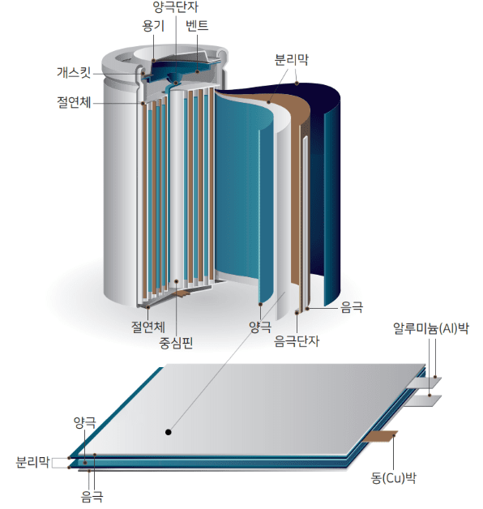
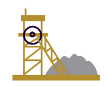
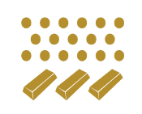
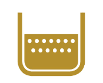
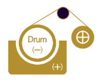
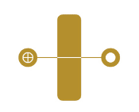
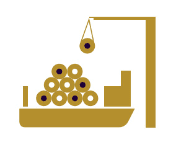
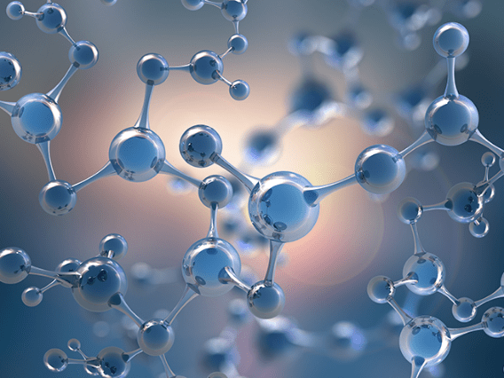

기후변화(Climate Change)에 대한 전 지구적인 관심과 공동 대응은 자동차산업을 중심으로 그와 관련된 전·후방산업의 지형도를 송두리째 바꿔 놓고 있습니다. 탄소를 마구 뿜어내는 화석연료차량이 퇴출 날짜를 받아 둔 상황에서, 친환경차량의 핵심인 2차전지는 우리 정부의 '혁신성장 빅(Big)3 산업' 중 하나로 꼽힐 정도로 가장 전도유망한 분야로 각광받고 있습니다.
'아연과 납(연), 은과 같은 비철금속을 제련하는 기업'이라는 고정관념을 넘어서기 위해 고려아연이 공을 들이는 2차전지 소재는 황산니켈, 전지박(동박), 전구체입니다. 황산니켈과 동박, 전구체 모두 현재 전기차 배터리로 가장 널리 쓰이는 리튬이온 배터리 생산 과정에서 핵심적인 구성요소로 사용되고 있습니다.


Nickel(II) sulfate
황산니켈
용도
이차전지 양극재용 소재, 니켈도금용
특징
황산니켈 생산은 고려아연이 비철금속 생산 노하우를 살리면서 이차전지 산업을 겨냥한 신사업입니다. 고려아연은 2017년 자회사인 켐코(KEMCO)를 설립하면서 2차 전지사업에 본격적으로 진출했습니다. 켐코는 전기자동차와 에너지저장장치 등 전세계 친환경 산업 성장에 발맞춰, 2차전지 핵심소재인 황산니켈을 생산하고 있습니다. 연 3만톤의 황산니켈 생산을 시작으로, 최근 연간 8만톤 규모로 생산하고 있습니다.
경쟁력
고려아연의 자회사인 켐코(KEMCO)에서 보유한 황산니켈 생산능력은 연간 8만톤 규모로 국내 1위이며 세계에서도 상위권 입니다. 황산니켈 생산 사업에서 가장 중요한 요소는 원료입니다. 고려아연은 글로벌 광산업체간 오랜 신뢰 관계를 바탕으로 핵심 원료를 안정적으로 확보하고 있습니다. 글로벌 이차전지 시장 성장에 맞춰 고품질 황산니켈 생산을 위해 지속적으로 설비 및 품질을 개선하고 있습니다.
Copper Foil
전지박
용해와 전해라는 고려아연의 독보적 기술 경쟁력이 2차전지용 전지박 전문기업 케이잼(KZAM)을 탄생시켰습니다. 케이잼은 그 어느 곳과도 비교할 수 없는 전문성과 차별성을 가진 2차전지용 전지박 전문기업입니다. 케이잼이 만든 전지박은 전기차는 물론 2차전지 시장에도 새로운 바람을 불러일으킬 것입니다.
전지박의 용도
리튬 이온 이차전지는 양극, 음극, 전해질 및 분리막 등 4대 요소로 구성돼 있으며, 양극에서 공급된 리튬 이온을 음극에 보관했다가 전기 사용 시 다시 양극으로 공급하는 과정에서 전기의 충방전을 반복합니다. 이 중 음극은 전지박, 활물질, 전도성 물질 및 바인더로 구성되며, 전지박은 전기를 보관하는 활물질과 전도성 물질, 바인더를 안정되게 지지하는 역할을 함으로써 양극에 전기를 공급하는 집전체 역할을 합니다.

전지박 제조 공정
원료
고려아연이 자체 제조한 전기동과 구입한 동 스크랩(Cu Scrap) 원료 사용
용융 및 미분화 공정
고주파 전기유도로 설비를 이용해 원료 녹임
용해 및 전해액 제조 공정
황산에 동 원료를 녹여 황산구리액 제조
품질 검사 및 포장 공정
음극 드럼과 양극에 전기를 공급해 Electro-Winning 전해 기술로 고객이 요구하는 두께의 전지박 제조
열처리 및 슬리팅 공정
전지박의 컬(Curl) 품질 관리를 위해 당사가 정한 온도와 시간에서 열처리 실시, 고객의 2차전지 제조 가공성 향상
제박 공정
강도, 연신율, 두께, 조도, 광택도 등 고객이 정한 특별 특성을 품질 검사

Precursor
전구체
용도
이차전지 양극재용 소재, 니켈도금용
특징
고려아연은 세계 최대 전기차 배터리 제조사인 LG에너지솔루에 양극재를 공급하는 LG화학과 합작회사를 세우기로 양해각서(MOU)를 체결하고 전구체 제조사로의 도약을 위한 토대를 만들었습니다. 고려아연이 새롭게 진출하는 전구체(Precursor)는 2차전지 핵심 소재인 양극재의 바로 전 단계이며, 전구체와 리튬이 결합하면 양극재가 됩니다. 양극재 중 대부분 비중이 이 전구체로서, 양극재 26만톤을 생산하는데 들어가는 전구체는 26만톤 가까이 들어가는 구조입니다.
경쟁력
고려아연은 니켈 코발트 망간 등 양극재 소재를 추출할 기술력을 확보하고 있어 전구체 부문에서도 빠르게 경쟁력을 확보할 예정입니다
국내 전구체 자급도는 약 25%입니다. 현재 국내에서 한 해 필요한 전구체 수요가 약 20만톤인데 반해, 생산량은 4만~5만톤으로 추정됩니다. 이렇다 보니 국내 양극재 업체들은 니켈·코발트·망간 양극재의 전구체 대부분을 중국으로부터 들여오고 있는 실정입니다.
현재 미국과 호주 등이 중국산 소재에 고율의 관세를 부과할 가능성으로 국내 2차전지 업계에선 전구체의 자급도를 높일 필요가 있습니다.